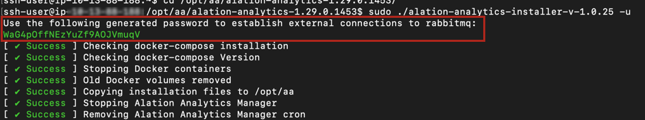

Update Alation Analytics V2¶
Customer Managed Applies to customer-managed instances of Alation
Available from release 2020.4
The steps below require the role of the Server Admin.
A newer Alation release may include changes and improvements for the Alation Analytics V2 components. In such a case, after updating the Alation Catalog to the new release, update Alation Analytics V2 to the latest compatible version.
Note that when the Alation Analytics V2 version becomes outdated after the Alation Catalog update, the ETL from Rosemeta is stopped until the Alation Analytics V2 components are updated to the latest compatible version.
How Do I Know if There is an Update for Alation Analytics V2?¶
After updating the Alation Catalog to a newer version, check the Alation Analytics V2 Settings page in Admin Settings > Alation Analytics. If a newer version of Alation Analytics V2 is available, you will see a warning message that Alation Analytics V2 requires an update: “Your Alation Analytics Version is Outdated”.
{kind=link}
Note
If the Alation Analytics V2 version becomes outdated, Server Admins will also receive an email notification that it requires an update when the next scheduled Alation Analytics V2 ETL is attempted by Alation.
Steps to Update Alation Analytics V2¶
Each Alation release comes bundled with a compatible Alation Analytics V2 package which also includes the update files. To update Alation Analytics, download the new Alation Analytics V2 bundle and then run the Alation Analytics V2 installer with the update option.
Starting from version 2021.3, Alation Analytics V2 installer supports assigning a user to own the Alation Analytics V2 directories, config file, and logs. In earlier versions, the ownership was assigned to the root user by default. Now, it can be assigned to any user on the Alation Analytics V2 host.
Assigning ownership to a user other than the default root is an explicit choice. It can be done when the username flag -w is passed with the installer commands.
Note
The user who is assigned Alation Analytics V2 ownership will have access to:
The Alation Analytics V2 installation directory and all its subdirectories except the Postgres data directory (default: /opt/alation-analytics)
The environment file /etc/default/alation-analytics
The logs directory /var/log/alation-analytics
Permissions to run the
dockercommands such asdocker psordocker logs.
Follow the steps below to update your Alation Analytics V2 components:
Open a Terminal window and SSH to your Alation Analytics V2 host.
Create a temporary directory, for example, tmp/update-analytics:
sudo mkdir /tmp/update-analytics
Note
Do not use the installation directory /opt/alation-analytics/ to create a temporary directory and extract the update package. Create a custom temporary directory that is located elsewhere and not at /opt/alation-analytics/.
In your browser, log in to the Alation Catalog and go to Admin Settings > Alation Analytics. There will be a warning message on top of the page when Alation Analytics V2 requires an update.
In step 1 of the installation instructions on the Settings page, copy the Curl command for downloading the newer version and paste it into the Terminal window that is already SSH’ed into the Alation Analytics V2 host.
Untar the downloaded Alation Analytics V2 .tar file into the temporary directory that you created in the previous step:
sudo tar -C /tmp/update-analytics -xzf ./alation-analytics-<version>.tar
Determine whether you need to use one of the available installation flags:
Flag
Description
-wAvailable in 2021.3 and newer
Lets you specify which system user will own the installed files, configs, and logs.
Without this flag, ownership will be assigned to the root user.
-bAvailable in 2023.1.4 and newer
Traffic to the Postgres and RabbitMQ containers will be bound to a specific IP address. The address will be stored in /etc/default/alation-analytics.env.
Without this flag, the Postgres and RabbitMQ containers are exposed on all network interfaces (0.0.0.0) in the host.
Run the installer script with the update flag
-uto update Alation Analytics V2. Run the installer as the root user (if you installed rootless Docker during the original installation) or using sudo. The installer stops the current Alation Analytics V2 Docker containers and Alation Analytics Manager, removes the outdated images from Docker, moves the contents of the new images and Manager to the installation directory, and registers and starts the new images and Manager.To update with no additional flags:
sudo /tmp/update-analytics/alation-analytics-<version>/alation-analytics-installer-<version> -u
Example:
sudo /tmp/update-analytics/alation-analytics-1.1.0.139590/alation-analytics-installer-v-1.0.18 -u
Applies to version 2021.3 and newer: To update and change the ownership to a different user, run the update command with the flag
-w, as shown below, and follow the prompts in the console to provide a new username.sudo /tmp/update-analytics/alation-analytics-<version>/alation-analytics-installer-v-x.x.x -u -w <username>
Example:
sudo /tmp/update-analytics/alation-analytics-<version>/alation-analytics-installer-v-x.x.x -u -w aav2_admin
Applies to version 2023.1.4 and newer: To update and bind incoming traffic to a specific IP address, run the update command with the flag
-b:sudo /tmp/update-analytics/alation-analytics-<version>/alation-analytics-installer-v-x.x.x -u -b <ip_address>
Example:
sudo /tmp/update-analytics/alation-analytics-<version>/alation-analytics-installer-v-x.x.x -u -b 10.13.14.108
Applies to version 2023.3.2 and newer: The RabbitMQ component requires basic authentication. If you haven’t set a RabbitMQ password yet, the Alation Analytics updater will automatically generate one for you and display it in the console when you run the update command. Copy and securely store this password. You’ll need to set it in alation_conf in a subsequent step of this instruction.
If the RabbitMQ password was generated for your instance during the update, then after the update, use alation_conf to set it in the parameter
alation_analytics-v2.rmq.config.password:On the Alation server, enter the Alation shell.
sudo /etc/init.d/alation shell
Change to the
alationuser.sudo su alation
Set the value in alation_conf.
alation_conf alation_analytics-v2.rmq.config.password -s 'your_password'
Note
For more details about alation_conf, refer to Using alation_conf.
Go back to the web browser with the Alation Analytics Settings page. In the Alation Analytics installation instructions section, click the Initiate Analytics Database button to run the migration and finalize the update. The new version will be displayed on the Alation Analytics Settings page as Current installed version.
Note
The
aamanagerservice may not start automatically after the update of Alation Analytics.To check the status of
aamanager, on the Alation Analytics host, use the commandsudo service aamanager status.To start it manually, use the command:
sudo service aamanager start.